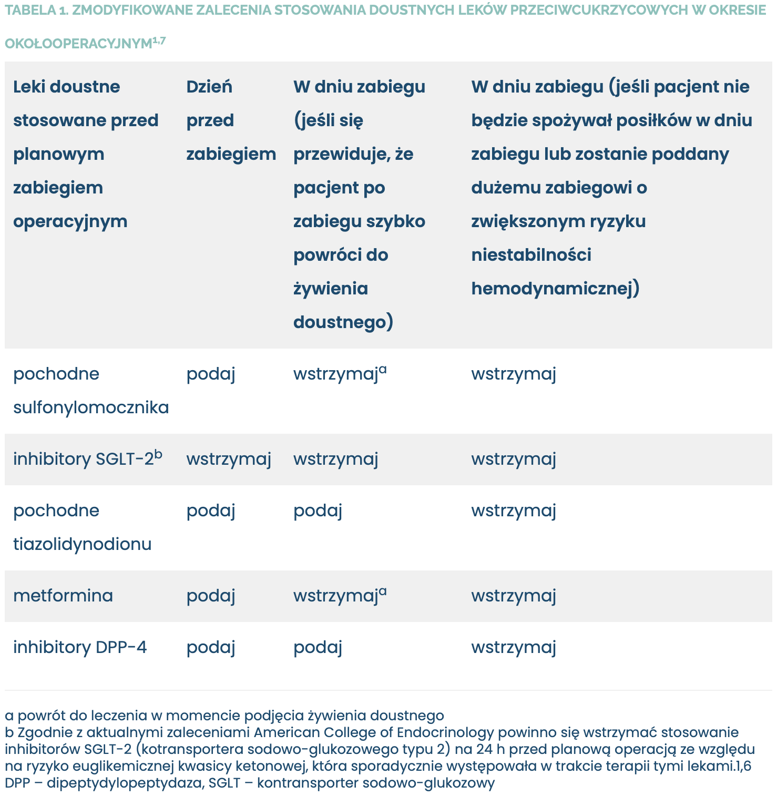
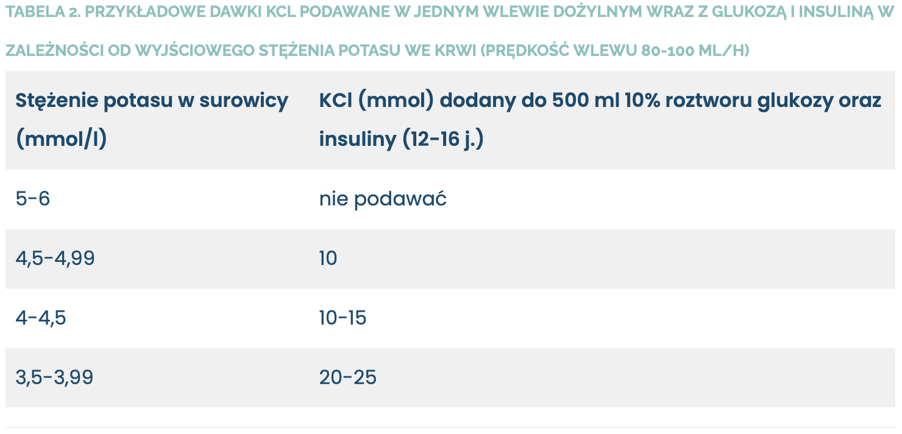
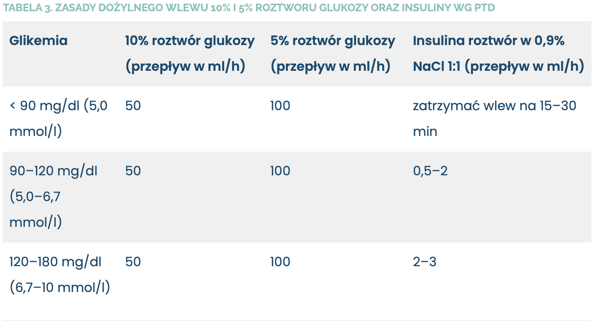
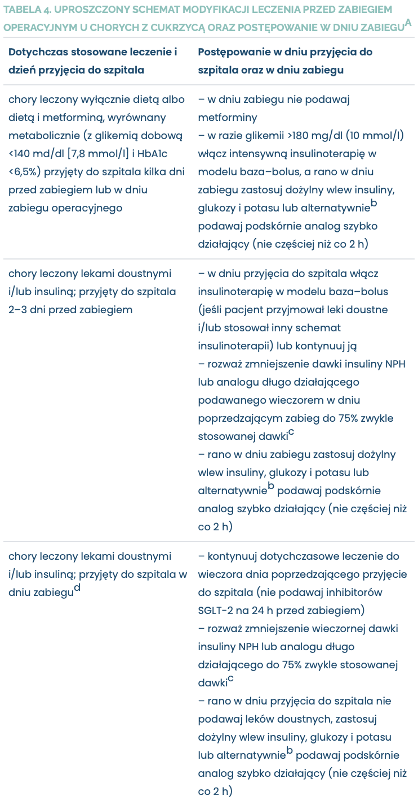
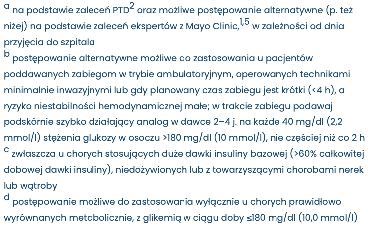

Rozdział 1 Pacjent z cukrzycą
lek. Dorota Studzińska1, prof. dr hab. n. med. Wojciech Szczeklik2
- Szpital Zakonu Bonifratrów św. Jana Grandego w Krakowie
- Uniwersytet Jagielloński Collegium Medicum w Krakowie
Konsultacja: prof. dr hab. n. med. Dorota Zozulińska‑Ziółkiewicz
1.1 Wprowadzenie
Niniejszy artykuł został oparty na wytycznych Polskiego Towarzystwa Diabetologicznego (PTD). Dodatkowo, ze względu na dynamicznie zmieniające się trendy w opiece okołooperacyjnej – na przykład wzrost liczby zabiegów wykonywanych w trybie jednego dnia, wprowadzenie zasad protokołu ERAS (enhanced recovery after surgery – współczesna kompleksowa formuła opieki okołooperacyjnej mająca na celu poprawę wyników leczenia) – przedstawiamy też alternatywne sposoby postępowania, opierając się na dostępnych danych naukowych i praktyce klinicznej.
Artykuł ma dostarczyć praktycznych wskazówek ułatwiających prowadzenie pacjenta z cukrzycą w okresie okołooperacyjnym, z wykorzystaniem różnych schematów postępowania.
1.2 Kwalifikacja do zabiegu operacyjnego
U każdego pacjenta z cukrzycą przed planowym zabiegiem operacyjnym należy w celu oceny wyrównania cukrzycy oznaczyć odsetek hemoglobiny glikowanej (HbA1c). Za aktualny można uznać odsetek oznaczony do 4–6 tygodni przed zabiegiem. Nieprawidłowa wartość HbA1c świadczy o złej kontroli cukrzycy i może się wiązać ze zwiększonym ryzykiem wystąpienia powikłań w okresie okołooperacyjnym.1
U chorych ze źle kontrolowaną cukrzycą należy rozważyć odroczenie planowego zabiegu operacyjnego w przypadku:2
- HbA1c >8,5%, jeśli przewidujemy, że przesunięcie terminu zabiegu pozwoli na lepsze wyrównanie cukrzycy
- utrzymującej się w profilu dobowym glikemii >250 mg/dl (13,9 mmol/l).
Odroczenie planowego zabiegu jest bezwzględnie konieczne, jeśli występuje glukozuria z acetonurią.
U każdego pacjenta z cukrzycą przygotowywanego do zabiegu należy także ocenić ryzyko sercowonaczyniowe. Zasady takiej oceny, zgodnie z wytycznymi kanadyjskimi, zostaną przedstawione w osobnym artykule.3
1.3 Przed zabiegiem operacyjnym
1.3.1 Stanowisko PTD
Według zaleceń PTD u pacjentów z cukrzycą, u których konieczna będzie zmiana sposobu odżywiania, w okresie okołozabiegowym (optymalnie 2–3 dni przed zabiegiem) należy wstrzymać podawanie leków doustnych i/lub mieszanek insulinowych oraz zastosować intensywną insulinoterapię w modelu baza–bolus: analog długo działający podawany podskórnie 1 raz na dobę lub insulina o pośrednim czasie działania – NPH podawana 1 lub 2 razy na dobę oraz doposiłkowe wstrzyknięcia insuliny krótko działającej lub analogu szybko działającego. Wyjątek stanowią chorzy, u których cukrzyca jest leczona wyłącznie dietą albo dietą i metforminą, z glikemią dobową <140 md/dl (7,8 mmol/l) i HbA1c <6,5% – jedyną zalecaną przez PTD modyfikacją leczenia jest wtedy wstrzymanie podawania metforminy na co najmniej 24 godziny przed planowanym zabiegiem. Szacunkowe dobowe zapotrzebowanie na insulinę u osoby dorosłej wynosi około 0,3–0,7 j./kg mc.:
- 50–60% dawki dobowej stanowi insulina krótko działająca lub analog szybko działający podawane przed posiłkami według schematu 50–20–30% wyliczonej dawki (insulina krótko działająca na 20–30 min przed posiłkiem, analog tuż przed nim)
- 40–50% dobowej dawki stanowi analog długo działający podawany zwykle w godzinach wieczornych (1 ×/d) lub insulina o pośrednim czasie działania (NPH) podawana 1 × dz. albo w 2 dawkach: około godziny 7.00–8.00 (40% wyliczonej dawki) oraz około godziny 22.00–23.00 (60% wyliczonej dawki). W praktyce insulinę NPH często podaje się raz na dobę w godzinach wieczornych.
Przykładowe początkowe dawki insuliny dla chorego ważącego 70 kg, leczonego dotychczas lekami doustnymi: szacunkowe dobowe zapotrzebowanie na insulinę wynosi około 28 j. (przy założeniu, że na kg mc. przypada 0,4 j. insuliny), z tego 40% dawki dobowej (11 j.) stanowi insulina NPH, podawana w godzinach wieczornych, na przykład o 22.00, a 60% (17 j.) analog szybko działający podawany przed posiłkami: 8 j. przed śniadaniem, 4 j. przed obiadem, 5 j. przed kolacją.
W „Zaleceniach” PTD podkreśla się, że intensywna insulinoterapia nie jest konieczna w przypadku wykonywania tzw. małych zabiegów ope racyjnych (np. nacięcia ropnia, operacji zaćmy), podczas których nie dochodzi do zmiany sposobu odżywiania.
Pacjenci leczeni za pomocą osobistej pompy insulinowej (głównie chorzy z cukrzycą typu 1) powinni ją stosować do dnia operacji.

1.3.2 Modyfikacja leczenia cukrzycy przed zabiegiem chirurgicznym w świetle aktualnych badań
Biorąc pod uwagę wyniki ostatnich badań, obejmujących pacjentów z cukrzycą typu 2 leczonych na stałe insuliną, należy rozważyć redukcję dawki bazowej insuliny (analogu długo działającego lub insuliny NPH), podawanej wieczorem w dniu poprzedzającym zabieg, do 75% zwykle stosowanej dawki.4 Takie postępowanie jest szczególnie istotne dla chorych:
- stosujących duże dawki insuliny bazowej (>60% całkowitej dobowej dawki insuliny)
- niedożywionych lub z towarzyszącymi chorobami nerek lub wątroby, które predysponują do hipoglikemii w warunkach przedłużonego głodzenia.
Warto podkreślić, że aktualnie zmienia się podejście do stosowania metforminy w okresie okołozabiegowym. Wydaje się, że nie ma bezwzględnej potrzeby odstawiania tego leku kilka dni przed operacją – nie potwierdzono bowiem związku pomiędzy stosowaniem metforminy a ryzykiem wystąpienia kwasicy mleczanowej w okresie okołooperacyjnym.1,5 W Stanach Zjednoczonych Agencja ds. Żywności i Leków (Food and Drug Administration – FDA) zaleca odstawienie metforminy jedynie u pacjentów przed zabiegiem, podczas którego konieczne będzie dotętnicze podanie jodowych środków cieniujących.6
Wytyczne amerykańskie (American Diabetes Association), w przeciwieństwie do PTD, pozwalają u chorych na cukrzycę wyrównanych metabolicznie kontynuować dotychczasową terapię lekami doustnymi do dnia planowego zabiegu operacyjnego. Zmodyfikowane zalecenia dotyczące stosowania doustnych leków przeciwcukrzycowych w okresie okołooperacyjnym przedstawiono w tabeli 1.1,7 W razie występowania w okresie okołooperacyjnym hiperglikemii (stężenie glukozy >180 mg/dl [10,0 mmol/l]) pomimo stosowania leków doustnych lub jeśli nie można szybko wznowić żywienia doustnego, należy zastosować insulinoterapię według zasad przedstawionych w dalszej części artykułu.
Sytuacje szczególne w dniach poprzedzających zabieg: w razie konieczności pominięcia posiłku (np. z powodu wykonania przed zabiegiem tomografii komputerowej z kontrastem) pacjent powinien otrzymać dożylny wlew 500 ml 10% roztworu glukozy z 12 j. insuliny krótko działającej lub analogu szybko działającego oraz 10–20 mmol/l chlorku potasu – dawki insuliny oraz chlorku potasu powinno się modyfikować w zależności od stężeń glukozy i potasu we krwi. W celu zwiększenia bezpieczeństwa pacjenta podczas pobytu w szpitalu wskazane jest monitorowanie glikemii za pomocą glukometru (wg PTD zaleca się pomiary przed głównymi posiłkami i po nich oraz dodatkowo – u osób obciążonych zwiększonym ryzykiem nocnej hipoglikemii – pomiar o godzinie 3.00 lub pomiary co 1–2 h podczas dożylnego wlewu insuliny).
1.4 W trakcie zabiegu operacyjnego
W miarę możliwości pacjent z cukrzycą powinien być operowany w godzinach porannych, żeby maksymalnie skrócić czas pozostawania na czczo.
1.4.1 Stanowisko PTD
Zarówno hiper, jak i hipoglikemia zwiększają częstość powikłań okołozabiegowych.2 Przez cały okres okołooperacyjny PTD zaleca utrzymywanie glikemii w przedziale 100–180 mg/dl (5,6– 10,0 mmol/l) za pomocą dożylnych wlewów insuliny oraz glukozy, które należy rozpocząć rano w dniu zabiegu i kontynuować do czasu wznowienia przyjmowania posiłków drogą doustną. Do zrównoważenia 1 g egzogennej glukozy potrzeba 0,2–0,3 j. insuliny. Na przykład: 25 g glukozy znajduje się w 500 ml 5% roztworu glukozy i w 250 ml 10% roztworu glukozy.
Algorytmy dożylnego podawania insuliny, glukozy i potasu w dniu zabiegu operacyjnego według „Zaleceń” PTD – p. ramka 1.
Ramka 1 Algorytmy dożylnego podawania insuliny, glukozy i potasu w dniu zabiegu operacyjnego według zaleceń PTD
Algorytm 1 - preferowane postępowanie u wszystkich chorych na cukrzycę, a zwłaszcza u osób z bezwzględnym niedoborem insuliny (w tym z cukrzycą typu 1):
- osobne wlewy dożylne insuliny, potasu i 5–10% roztworu glukozy
- insulina krótko działająca lub analog szybko działający (roztwór 1 j. insuliny w 1 ml 0,9% NaCl) oraz glukoza podawane za pomocą pomp infuzyjnych
- w trakcie wlewu kontrola glikemii co 1 h (docelowo 100–180 mg/dl [5,6–10,0 mmol/l])
- KCl (10–20 mmol) podawany w osobnym wlewie kroplowym
- w przypadku wzrostu glikemii o każde 30–50 mg/dl ponad 180 mg/dl (10,0 mmol/l) należy zwiększyć prędkość podawania insuliny o 1–2 j./h
- w razie glikemii >250 md/dl (13,9 mmol/l) należy wstrzymać dożylny wlew glukozy do czasu zmniejszenia glikemii <180 mg/dl (10,0 mmol/l) oraz zwiększyć prędkość dożylnego wlewu insuliny (p. tab. 3).
Algorytm 2 - postępowanie możliwe do zastosowania u chorych na cukrzycę z zachowanym wydzielaniem endogennej insuliny, zwłaszcza jeśli zabieg operacyjny wiąże się z koniecznością pominięcia nie więcej niż 1–2 posiłków:
- wlew 500 ml 10% roztworu glukozy z 12–16 j. insuliny krótko działającej lub analogu szybko działającego wraz z 10–25 mmol KCl podawany z prędkością 80 ml/h (proponowane dawki KCl w zależności od wyjściowego stężenia potasu we krwi – p. tab. 2)
- u osób szczupłych, stosujących w leczeniu cukrzycy przed zabiegiem wyłącznie doustne leki przeciwcukrzycowe, zasadne może być podanie mniejszej dawki insuliny (<12 j.)
- wlew większej dawki insuliny (>16 j.) należy rozważyć u osób otyłych, z ciężkim zakażeniem, poddawanych zabiegowi sercowo-płucnemu lub z wyjściową glikemią >180 mg/dl (10 mmol/l).

1.4.2 Alternatywna metoda wyrówniania glikemii w okresie okołooperacyjnym
W niedawno opublikowanym artykule naukowcy z Mayo Clinic, opierając się na zaleceniach American Diabetes Association, zaproponowali swoje rozwiązania stosowane w okresie okołooperacyjnym u chorych z cukrzycą, które przedstawiono w ramce 2.1,5 Dotyczą one tylko chorych na cukrzycę typu 2 z dobrze kontrolowaną glikemią i poddawanych zabiegom w trybie ambulatoryjnym, operowanych technikami minimalnie inwazyjnymi, lub zabiegom trwającym krótko, podczas których ryzyko niestabilności hemodynamicznej jest małe.
Ramka 2 Algorytmy podawania podskórnych wstrzyknięć szybko działającego analogu insuliny w trakcie zabiegu chirurgicznego u chorych z cukrzycą według zaleceń ekspertów z Mayo Clinic
- U chorych z prawidłowo wyrównaną cukrzycą w dniach poprzedzających planowy zabieg kontynuuje się leczenie lekami doustnymi i/lub insuliną (wieczorem w dniu poprzedzającym operację u osób z cukrzycą typu 2 zaleca się redukcję dawki analogu długo działającego lub insuliny NPH do 75% zwykle stosowanej dawki)
- Rano w dniu zabiegu wstrzymuje się leki doustne, a u chorych stosujących insulinę długo działającą lub insulinę NPH zaleca się podanie 50% zwykle stosowanej dawki. Pomiar glikemii powinno się wykonywać co 1–2 godziny
- W przypadku występowania u pacjenta podczas zabiegu hiperglikemii (stężenie glukozy >180 mg/dl [10,0 mmol/l]) zaleca się podskórne podawanie analogu szybko działającego (w dawce 2–4 j. na każde 40 mg/dl [2,2 mmol/l] stężenia glukozy w osoczu krwi >180 mg/dl [>10 mmol/l], nie częściej niż co 2 h). Stosowanie w okresie okołooperacyjnym podskórnych dawek analogu szybko działającego jest szczególnie zalecane u pacjentów poddawanych zabiegom w trybie ambulatoryjnym, operowanych technikami minimalnie inwazyjnymi lub gdy planowany czas zabiegu jest krótki (<4 h), a ryzyko niestabilności hemodynamicznej małe1
- U chorych poddawanych dużym zabiegom (o przewidywanym czasie trwania >4 h), z ciężką hiperglikemią lub cukrzycą typu 1 wskazany jest dożylny wlew insuliny zgodnie z zalecanym przez PTD algorytmem 1 – p. ramka 1.
1.4.3 Hipoglikemia
W razie wystąpienia u chorego hipoglikemii (≤70 mg/dl [3,9 mmol/l]) zaleca się zatrzymanie dożylnego wlewu insuliny, zgodnie ze schematem przedstawionym w tabeli 3, a w przypadku hipoglikemii występującej podczas stosowania intensywnej insulinoterapii podskórnej metodą baza–bolus – spożycie węglowodanów prostych lub ewentualnie (w razie dostępności) tabletek lub żelu zawierających glukozę.5 Ciężkie objawy hipoglikemii lub niemożność doustnego przyjęcia węglowodanów przez chorego wymagają dożylnego wlewu 10–20% roztworu glukozy pod kontrolą glikemii i/lub po dania 1 mg glukagonu dożylnie, domięśniowo lub podskórnie (zwłaszcza w przypadku utrudnionego dostępu do żył). W razie potrzeby należy zmodyfikować dotychczasowe leczenie hipoglikemizujące.

1.5 Podsumowanie
Wychodząc naprzeciw oczekiwaniom personelu uczestniczącego w opiece okołooperacyjnej nad pacjentem z cukrzycą, w tabeli 4 przedstawiamy proponowany schemat modyfikacji leczenia cukrzycy oraz postępowania w dniu zabiegu operacyjnego w zależności od dnia przyjęcia do szpitala.
1.6 Po zabiegu operacyjnym
Powrót do insulinoterapii w modelu wielokrotnych wstrzyknięć lub za pomocą osobistej pompy insulinowej jest możliwy w momencie podjęcia przez pacjenta żywienia doustnego (dożylny wlew insuliny należy kontynuować jeszcze przez 1–3 h po podaniu podskórnym insuliny i spożyciu posiłku). W przypadku przejściowego stosowania intensywnej insulinoterapii PTD zaleca powrót do dotychczasowego leczenia lekami doustnymi po zagojeniu rany operacyjnej, przy prawidłowym wyrównaniu metabolicznym oraz dobowym zapotrzebowaniu na insulinę <30 j. Stosowanie w okresie pooperacyjnym intensywnej insulinoterapii w modelu baza–bolus wiąże się z istotnie mniejszym ryzykiem powikłań niż doraźne obniżanie glikemii za pomocą stosowanej podskórnie insuliny krótko działającej lub szybko działającego analogu.8 Warto jednak podkreślić, że zalecenia amerykańskie dopuszczają powrót do dotychczas stosowanego leczenia lekami doustnymi i/lub insuliną już z chwilą podjęcia żywienia doustnego, przy prawidłowym wyrównaniu metabolicznym (glikemia w ciągu doby ≤180 mg/dl [10,0 mmol/l]) – zwłaszcza u chorychwypisywanych do domu w dniu zabiegu.1


Uwaga 1: zasady kontroli glikemii u wszystkich chorych na cukrzycę, niezależnie od stosowanego leczenia:
- docelowa glikemia w okresie okołooperacyjnym: 100–180 md/dl (5,6–10mmol/l)
- pomiar glikemii w trakcie zabiegu co 2 h lub co 1 h (jeśli zastosowano insulinę).
Uwaga 2: w razie konieczności dotętniczego podania jodowego środka cieniującego należy wstrzymać podawanie metforminy na co najmniej 24 h przed procedurą. W pozostałych przypadkach metforminę powinno się odstawić najpóźniej rano w dniu operacji. W każdym przypadku zaleca się odstawienie inhibitorów SGLT‑2 na 24 h przed planowanym zabiegiem.
1.6.1 Opis przypadku 1
Na oddział chirurgii naczyń w trybie planowym został przyjęty 80-letni mężczyzna z cukrzycą typu 2 leczony lekami doustnymi (metformina 850 mg 3 × dz. oraz gliklazyd MR 60 mg 1 × dz. rano) w celu wszczepienie stentgraftu aortalnego z powodu podnerkowego tętniaka aorty brzusznej. Odsetek HbA1c oznaczony 3 tygodnie przed przyjęciem do szpitala wynosił 7,3%. Pacjent ważył 80 kg. W dniu przyjęcia do szpitala odstawiono leki doustne i włączono insulinę w modelu wielokrotnych wstrzyknięć: doposiłkową insulinę aspart w początkowych dawkach 10 j. – 4 j. – 6 j. oraz insulinę NPH podawaną o godzinie 22.00 w dawce 12 j. W 3. dniu od przyjęcia do szpitala wykonano zabieg. W tym dniu chory nie spożywał posiłków, glikemia na czczo wynosiła 150 mg/dl (8,3 mmol/l), a poranne stężenie potasu we krwi – 4,1 mmol/l. O godzinie 8.00 rano podłączono dożylny wlew krótko działającej insuliny ludzkiej w pompie infuzyjnej z początkową prędkością 2 ml/h, wlew 5% roztworu glukozy z początkową prędkością 100 ml/h oraz wlew 20 mmol KCl w 500 ml płynu wieloelektrolitowego. Glikemię monitorowano co 1 h, modyfikowano dawkowanie/przepływ insuliny i glukozy tak, by utrzymać glikemię w przedziale 100–180 mg/dl (5,6–10,0 mmol/l). Stężenie potasu skontrolowano o godz. 16.00 – wynosiło 3,85 mmol/l, i podano ponownie 40 mmol KCl w 500 ml płynu wieloelektrolitowego w powolnym wlewie, zlecono kontrolę stężenia potasu rano następnego dnia. Dożylny wlew insuliny oraz glukozy kontynuowano do godzin porannych dnia następnego, kiedy to pacjent zjadł śniadanie (tuż przed posiłkiem podano dodatkowo podskórnie 10 j. insuliny aspart), po 2 godzinach od zakończenia śniadania odłączono dożylny wlew insuliny. Do obiadu podano podskórnie insulinę aspart w dawce 4 j. Insulinoterapię w modelu metodą baza–bolus kontynuowano do 7. doby po zabiegu, w tym dniu usunięto szwy w pachwinach i wypisano pacjenta do domu z zaleceniem powrotu do dotychczas stosowanego leczenia doustnego.
1.6.2 Opis przypadku 2
Na oddział chirurgii naczyń w trybie planowym został przyjęty 72-letni mężczyzna z cukrzycą typu 2 – leczony metforminą o przedłużonym uwalnianiu, przyjmowaną w dawce 1000 mg wieczorem w czasie kolacji, oraz dwufazowym analogiem insuliny aspart 30 stosowanym 2 × dz. s.c. (14 j. rano przed śniadaniem oraz 10 j. wieczorem przed kolacją) – w celu wykonania zabiegu wewnątrznaczyniowego w obrębie tętnic kończyn dolnych. Odsetek HbA1c oznaczony 2 tygodnie przed przyjęciem do szpitala wynosił 7,5%. Pacjent ważył 90 kg. W dniu przyjęcia do szpitala odstawiono metforminę oraz dwufazowy analog insuliny i włączono insulinę w modelu wielokrotnych wstrzyknięć: doposiłkową insulinę aspart w początkowych dawkach 11 j. – 4 j. – 7 j. oraz insulinę NPH podawaną o godzinie 22.00 w dawce 14 j. W 2. dniu od przyjęcia do szpitala wykonano zabieg wewnątrznaczyniowy. W tym dniu pacjent nie zjadł śniadania, glikemia na czczo wynosiła 160 mg/dl (8,9 mmol/l), a poranne stężenie potasu we krwi 4,6 mmol/l. O godzinie 8.00 rano pacjentowi podłączono 500 ml 10% roztworu glukozy z 16 j. krótko działającej insuliny ludzkiej oraz 10 mmol KCl we wlewie kroplowym z prędkością 80 ml/h. Monitorowano glikemię co godzinę. Po upływie 2,5 godziny od zabiegu, o godzinie 13.00 pacjent zjadł obiad, podczas którego podano 4 j. insuliny aspart podskórnie, a o godzinie 14.00 zakończono dożylny wlew glukozy z insuliną. Intensywną insulinoterapię metodą baza–bolus kontynuowano do dnia następnego. Po południu chory został wypisany do domu z zaleceniem powrotu do leczenia przeciwhiperglikemicznego stosowanego przed hospitalizacją, począwszy od kolacji w dniu wypisu ze szpitala. Ze względu na zastosowanie jodowego środka cieniującego w trakcie zabiegu naczyniowego zalecono ponowne włączenie metforminy dopiero następnego dnia wieczorem.
Piśmiennictwo
1. Duggan E.W., Carlson K., Umpierrez G.E.: Perioperative hyperglycemia management: an update. Anesthesiology, 2017; 126: 547–560
2. Zalecenia kliniczne dotyczące postępowania u chorych na cukrzycę. Stanowisko Polskiego Towarzystwa Diabetologicznego. Diabetol. Prakt., 2019; 5: 1–100
3. Duceppe E., Parlow J., MacDonald P. I wsp.: Canadian Cardiovascular Society Guidelines on perioperative cardiac risk assessment and management for patients who undergo noncardiac surgery. Can. J. Cardiol., 2017; 33: 17–32
4. Demma L.J., Carlson K.T., Duggan E.W. I wsp.: Effect of basal insulin dosage on blood glucose concentration in ambulatory surgery patients with type 2 diabetes. J. Clin. Anesth., 2017; 36: 184–188
5. Simha V., Shah P.: Perioperative glucose control in patients with diabetes undergoing elective surgery. JAMA, 2019; 321: 399
6. Flory J., Lipska K.: Metformin in 2019. JAMA, 2019; 321: 1926–1927
7. American Diabetes Association: 14. Diabetes Care in the Hospital: Standards of Medical Care in Diabetes – 2018. Diabetes Care, 2018; 41 (supl. 1): S144–S151
8. Umpierrez G.E., Smiley D., Jacobs S. I wsp.: Randomized study of basal‑bolus insulin therapy in the inpatient management of patients with type 2 diabetes undergoing general surgery (RABBIT 2 surgery). Diabetes Care, 2011; 34: 256–2561.6.3 Komentarz
Prof. dr hab. n. med. Dorota Zozulińska - Ziółkiewicz
Artykuł Opieka okołooperacyjna nad pacjentem z cukrzycą jest cenną inicjatywą i podjęciem polemiki z aktualnym stanowiskiem Polskiego Towarzystwa Diabetologicznego (PTD). Autorzy artykułu na podstawie nowych danych z piśmiennictwa oraz własnego doświadczenia klinicznego proponują upraktycznienie rekomendacji PTD. Postęp w zakresie diagnostyki i metod operacyjnych przyczyniły się do znacznego skrócenia hospitalizacji na oddziałach zabiegowych, co dotyczy także chorych na cukrzycę.
Kwalifikując chorego na cukrzycę do planowego zabiegu chirurgicznego, należy wziąć pod uwagę aktualną wartość odsetka HbA1c, czyli wynik badania wykonanego nie wcześniej niż 3 miesiące, a najlepiej do miesiąca przed planowanym zabiegiem. Na podstawie wyników badań klinicznych wyznaczono wartość graniczną HbA1c 8,5%. Większe wartości wiążą się ze znacząco większym ryzykiem powikłań okołozabiegowych.1,2 Interpretując odsetek HbA1c, należy pamiętać, że w połowie za jego wartość odpowiada glikemia podczas ostatniego miesiąca poprzedzającego oznaczenie HbA1c. Ponadto trzeba uwzględnić czynniki, które zaniżają lub zawyżają uzyskany wynik.2 Jeżeli u chorego występuje m.in. niedokrwistość, ciężka hiperbilirubinemia i hipertriglicerydemia, to ocenę wyrównania cukrzycy należy głównie oprzeć na interpretacji profili dobowych glikemii. Odczyt danych z glukometru za pomocą specjalnych programów komputerowych pozwala na wyznaczenie średniej wartości glikemii, odchylenia standardowego, a nawet odsetka wyników w zakresie docelowej glikemii.
Zalecenie PTD dotyczące przyjęcia chorego z cukrzycą typu 2 do szpitala na 2–3 dni przed zabiegiem odnosi się tylko do tych chorych, u których zachodzi potrzeba zastosowania w okresie okołozabiegowym insulinoterapii w modelu wielokrotnych wstrzyknięć. Takie postępowanie zwiększa bezpieczeństwo zarówno w trakcie, jak i po zabiegu, ale wydłuża czas hospitalizacji. Sposobem na skrócenie pobytu w szpitalu są propozycje amerykańskie, w których wskazuje się możliwość wykonywania niektórych zabiegów bez konieczności odstawiania leków doustnych. Bezpieczeństwo takiego postępowania potwierdzono w badaniach klinicznych. Podkreślić należy, że nawet w wytycznych amerykańskich przy zabiegach dużych, o zwiększonym ryzyku niestabilności hemodynamicznej oraz związanych ze wstrzymaniem żywienia doustnego w dniu zabiegu, zaleca się czasowe odstawienie leków nieinsulinowych. PTD zaleca odstawienie doustnych leków przeciwhiperglikemicznych na 2 dni przed zabiegiem.1 Ewolucja poglądów w tej kwestii jest wymogiem czasów. Dane naukowe wskazują, że podawanie metforminy powinno się wstrzymać w dniu zabiegu i nie ma powodów, aby zalecać odstawienie metforminy na 2–3 dni przed zabiegiem.
W trakcie hospitalizacji okresowe leczenie insuliną realizuje się w modelu wielokrotnych wstrzyknięć z zastosowaniem z reguły preparatów insuliny ludzkiej. W dniu zabiegu i przy konieczności żywienia parenteralnego PTD proponuje 2 algorytmy.1 Autorzy artykułu przedstawiają dodatkowo algorytm leczenia chorego na cukrzycę insuliną w dniu zabiegu, opracowany przez lekarzy z Mayo Clinic. Dotyczy on tylko chorych na cukrzycę typu 2 z dobrze kontrolowaną glikemią i poddawanych zabiegom w trybie ambulatoryjnym, operowanych technikami minimalnie inwazyjnymi, lub zabiegom trwającym krótko i związanym z małym ryzykiem niestabilności hemodynamicznej. U takich chorych zaleca się wstrzymanie doustnych leków przeciwhiperglikemicznych w dniu zabiegu i monitorowanie glikemii. U chorych na cukrzycę typu 2 leczonych lekami doustnymi w skojarzeniu z insuliną zaleca się zmniejszenie dotychczasowej dawki insuliny bazowej (preparat NPH lub analog długo działający) nocnej o 25% w dniu poprzedzającym zabieg oraz porannej, w przypadku jej stosowania, o 50%. Oczywiście w dniu zabiegu nie podaje się już doustnych leków przeciwhiperglikemicznych, stosowanych wcześniej w skojarzeniu z insuliną. Wartości glikemii przekraczające próg nerkowy, tj. 180 mg/dl (10 mmol/l), są wskazaniem do podania podskórnego szybko działającego analogu w ilości 2–4 j. na każde 40 mg/dl >180 mg/dl w odstępie czasowym nie krótszym niż 2 godziny. Postępowanie takie ma sens i uwzględnia farmakokinetykę szybko działającego analogu, który przy podaniu niewielkiej ilości szczyt działania utrzymuje między 45 a 120 minut od wstrzyknięcia podskórnego. Jednakże takie rozwiązanie zakłada brak wpływu działań anestetyczno‑chirurgicznych na mikrokrążenie i wchłanianie insuliny. Jedna jednostka insuliny może zmniejszyć glikemię o 30–50 mg/dl. Utworzony podskórny depozyt insuliny po kilkakrotnych bolusach może być powodem wystąpienia opóźnionej hipoglikemii. Zapobieganie temu niepożądanemu zdarzeniu to przede wszystkim odstąpienie od algorytmu proponowanego przez autorów z Mayo Clinic w przypadku utrzymywania się dużych wartości glikemii, pomimo podawania co 2–3 godziny szybko działającego analogu insuliny podskórnie, i dalsze podawanie insuliny drogą dożylną pod kontrolą glikemii. Okres półtrwania insuliny podawanej dożylnie wynosi około 15 minut, co zwiększa przewidywalność wpływu na glikemię. Zwiększenie bezpieczeństwa stosowania tego algorytmu można osiągnąć także przez skojarzenie podawania insuliny z ciągłym monitorowaniem glikemii (CGMS) – system ten, oprócz wskazywania aktualnej wartości glikemii, informuje również o trendzie i szybkości jej zmian.3 Te nowe technologie oparte na pomiarze stężenia glukozy w płynie śródtkankowym przynoszą dodatkowe korzyści, z których w moim odczuciu największą jest prognozowanie zmian glikemii w najbliższej przyszłości (trend glikemii). Wykorzystanie tych technologii u chorych hospitalizowanych w Polsce to teraźniejszość dla wybranych, ale zapewne przyszłość dla wielu.
Podsumowując: artykuł dostarcza wartościowych wskazówek dla postępowania okołozabiegowego u dorosłych chorych na cukrzycę. Praktyczne spojrzenie i konfrontacja z wytycznymi amerykańskimi są punktem wyjścia propozycji zmian, które powinny znaleźć odbicie w aktualizowanych corocznie „Zaleceniach” PTD.
Skróty: PTD – Polskie Towarzystwo Diabetologiczne
Piśmiennictwo
1. 2019 Guidelines on the management of diabetic patients. A position of Diabetes Poland. Clin. Diabet., 2019; 8: 1
2. Wierusz‑Wysocka B., Zozulińska‑Ziółkiewicz D.: Postępowanie w stanach nagłych i szcze‑ gólnych u chorych na cukrzycę. Gdańsk, ViaMedica, 2015
3. Levitt D.L., Silver K.D., Spanakis E.K.: Inpatient continuous glucose monitoring and glycemic outcomes. J. Diabetes Sci. Technol., 2017; 11: 1028–1035Artykuł został opublikowany na łamach “Medycyny Praktycznej” i zamieszczony na tej stronie internetowej za zgodą wydawcy. Copyright by Medycyna Praktyczna